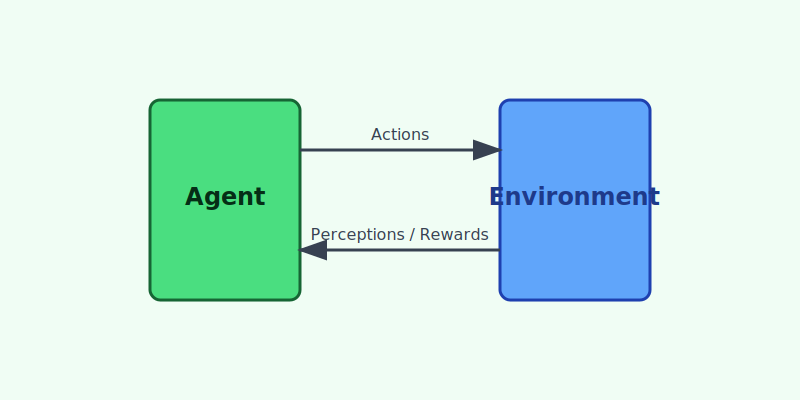

Creating intelligent agents that can perceive, reason, act, and learn.
Artificial Intelligence (AI) is the simulation of human intelligence processes by machines, especially computer systems. It encompasses a wide range of techniques, from rule-based systems to advanced machine learning models.
Search is a fundamental problem-solving technique in AI. It involves finding a sequence of actions that leads from a start state to a goal state. Examples include BFS, DFS, and A* search.
To act intelligently, agents need knowledge about the world. This involves representing information using logic (Propositional, First-Order) or semantic networks so that computers can process it.
The real world is uncertain. AI uses probability theory (Bayesian Networks, Markov Models) to reason and make decisions in the presence of uncertainty and incomplete information.
NLP enables computers to understand, interpret, and generate human language. It bridges the gap between human communication and computer understanding.
Robotics involves designing and building physical agents (robots) that interact with the real world. It combines AI with mechanical and electrical engineering.